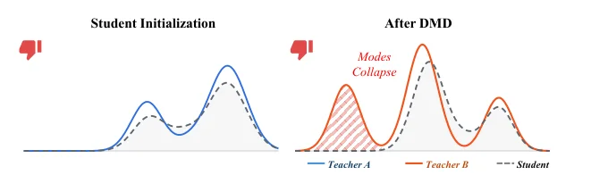
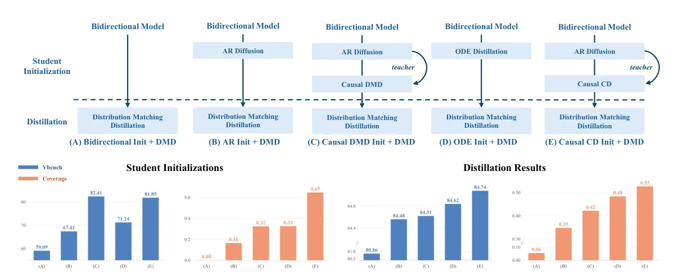
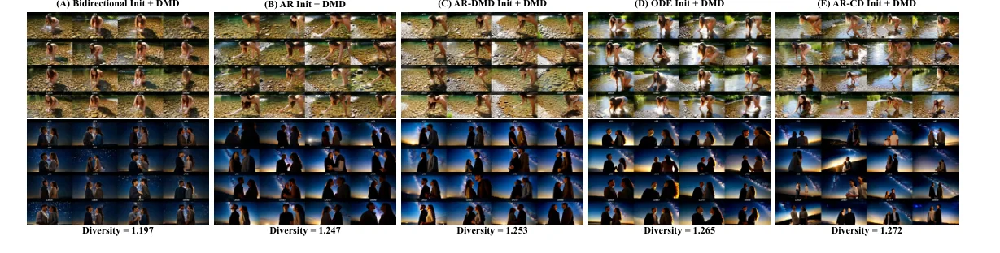
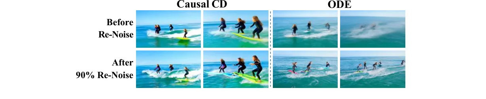
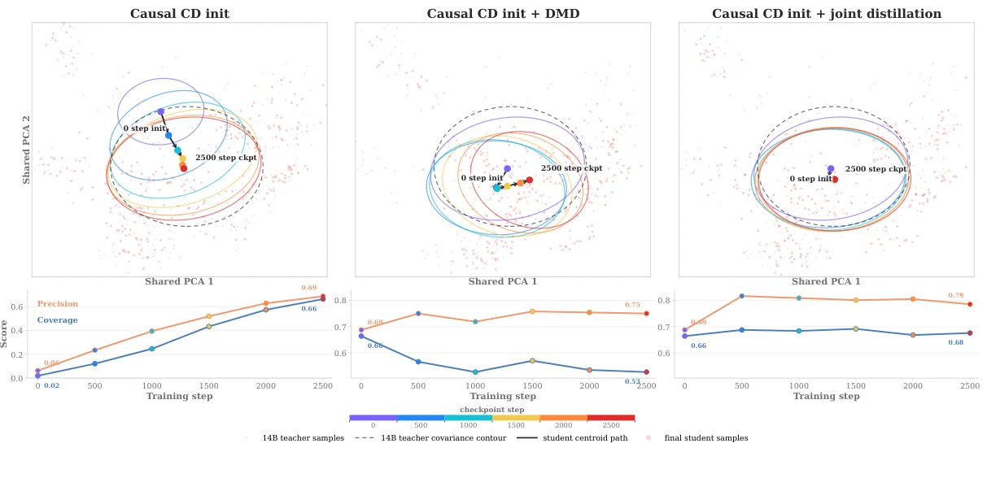
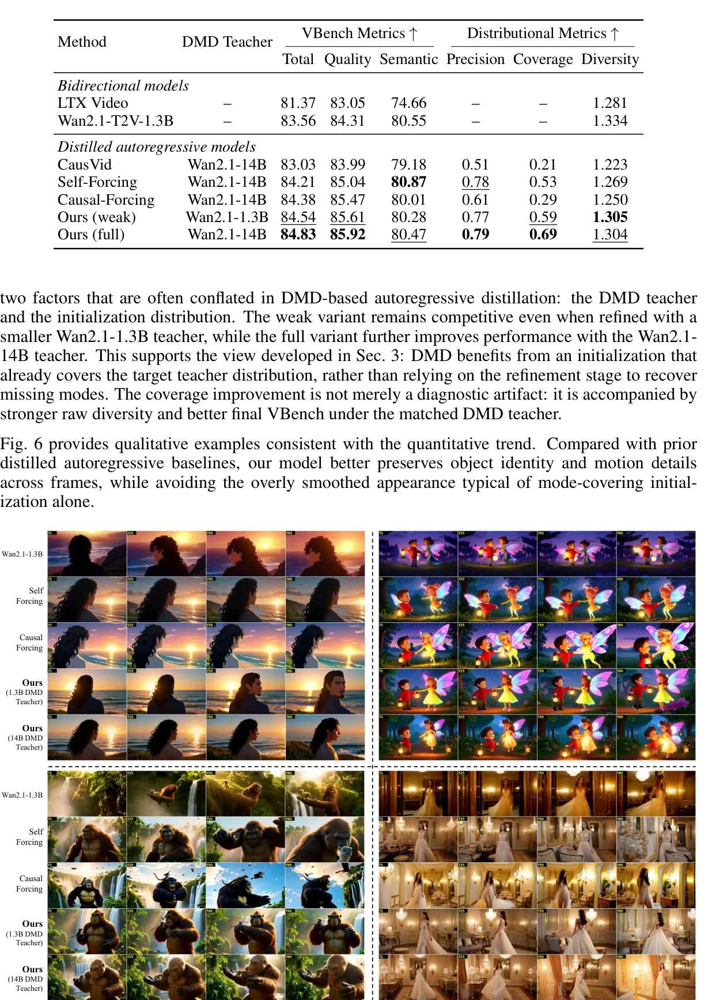
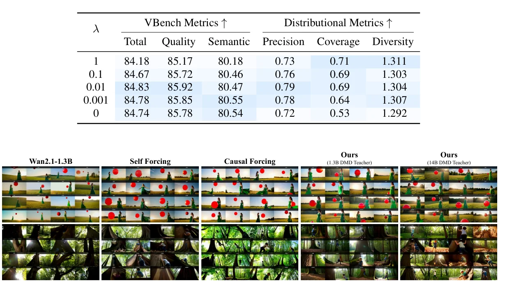

被 VBench 掩盖的崩塌
实时交互视频生成（世界模型、互动内容）正在把视频扩散模型逼到"少步、因果、流式"的墙角。主流做法是把一个多步的双向视频扩散教师，蒸馏成一个少步的自回归（AR）生成器。Self Forcing、Causal Forcing、CausVid 都遵循同一套多阶段流水线：先做一个初始化，再用 DMD（Distribution Matching Distillation）精修。
DistillAlign 审视了这套流水线里两个被默认接受、却从未被严格检验的假设：
跨阶段目标分布错位
初始化阶段的目标数据分布，与 DMD 阶段的教师分布，常常不是同一个分布。
- 初始化可能在 base 模型样本/轨迹、或外部视频数据上训练
- DMD 却换了一个更强的扩散教师
- 中间产物只看 VBench 视觉分，默认"初始化越好，最终越好"
纯 DMD 的晚期漂移
即便初始化与 DMD 目标已经对齐，长期训练下反向 KL 仍会把学生推向教师的高概率区域。
- VBench 先升后降
- 多样性（Vendi score）单调下跌
- 大运动、稀有动态等低密度 mode 被牺牲

论文用一个极其干净的受控实验验证假设一：在 Causal Forcing 流水线上，交换初始化数据源与 DMD 教师，观察最终 VBench。
| Init 数据源 | DMD 教师 | 对齐？ | VBench ↑ |
|---|---|---|---|
| Wan-14B | Wan-14B | ✓ | 84.74 |
| Wan-1.3B | Wan-1.3B | ✓ | 84.50 |
| Wan-14B | Wan-1.3B | ✗ | 84.16 |
| Wan-1.3B | Wan-14B | ✗ | 83.89 |
对齐可以补偿规模——这是反 scaling law 的信号
注意第二行：用 1.3B 数据初始化、再用 1.3B 教师做 DMD（对齐），拿到 84.50；而用 14B 数据初始化却配 1.3B 教师（错位）只有 84.16。最终表现不只由教师容量或数据质量决定，更由两阶段目标分布是否对齐决定。这是整篇论文最反直觉、也最有实践价值的结论：在蒸馏流水线里，"对齐"有时比"换更大的教师"更划算。
假设二的证据同样直接：在对齐设置下追踪纯 DMD 训练，VBench 在 1000 步见顶（84.74）后回落，而多样性从第一步起就单调下跌，从未回头。
| Step | 0 | 500 | 1000 | 1500 | 2500 |
|---|---|---|---|---|---|
| VBench ↑ | 82.60 | 84.44 | 84.74 | 84.21 | 83.90 |
| Diversity ↑ | 1.319 | 1.297 | 1.292 | 1.285 | 1.272 |
这两个观察指向同一个根源：DMD 的反向 KL 是 mode-seeking 的——它只会在学生已经有概率密度的地方"锐化"，却无法发现学生从未覆盖的 mode。要理解为什么，我们需要先回到三种蒸馏损失的"性格"。
三种蒸馏损失的"性格"
DistillAlign 的全部论证建立在一个分类学上：不同的蒸馏目标隐含不同的散度方向，因而有截然不同的 mode 行为。论文在 §2 把它们分成三类。
2.1 Flow Matching：地基
Flow matching 把生成建模为噪声 $x_1$ 与数据 $x_0$ 之间的线性插值速度场：
$$x_t=(1-t)x_0+t\,x_1,\qquad t\in[0,1]$$
$$\mathcal{L}_{\mathrm{FM}}(\theta)=\mathbb{E}_{t,x_0,x_1}\left[\|v_\theta(x_t,t,c)-(x_1-x_0)\|_2^2\right]$$
推理时从 $t=1$ 的噪声积分到 $t=0$ 的数据。这是教师模型本身的训练方式，也是后续所有蒸馏的起点。
2.2 ODE 蒸馏与一致性蒸馏：mode-covering 的"铺开派"
ODE 蒸馏让学生直接预测教师 PF-ODE 的端点 $\Psi_{1\to0}(x_1)$：
$$\mathcal{L}_{\mathrm{ODE}}(\theta)=\mathbb{E}_{t,x_1}\left[\|f_\theta(x_t,t)-\Psi_{1\to0}(x_1)\|_2^2\right]$$
一致性蒸馏（CD）不直接回归端点，而是强制相邻时间步的学生输出一致：
$$\hat{x}_{t_n}=x_{t_{n+1}}+(t_n-t_{n+1})\,v_\varphi(x_{t_{n+1}},t_{n+1})$$
$$\mathcal{L}_{\mathrm{CD}}(\theta)=\mathbb{E}_{n,x_0,x_1}\left[\|f_\theta(x_{t_{n+1}},t_{n+1})-f_{\theta^-}(\hat{x}_{t_n},t_n)\|_2^2\right]$$
$\theta^-$ 是 $\theta$ 的 EMA/stop-gradient 副本。收敛时 $f_\theta(x_t,t)=\Psi_{t\to0}(x_t)$。
为什么"回归教师端点"必然 mode-covering？
ODE 蒸馏和 CD 本质上都是对教师轨迹的回归（regression onto teacher endpoints）。回归损失在多模分布下的最优解是条件均值——当一个输入对应教师的多个可能输出时，模型学到的是它们的平均。平均保住了支撑集（coverage），代价是模糊和锐度损失。这正是论文反复观察到的"Causal CD 初始化更糊但覆盖更广"的数学根源。这类目标对应前向散度（forward divergence）/ mean-seeking 行为。
2.3 DMD：mode-seeking 的"收拢派"
DMD 最小化的是学生与教师在各噪声层级上的反向 KL：
$$\mathcal{L}_{\mathrm{DMD}}(\theta)=\mathbb{E}_t\left[w(t)\,\mathrm{KL}(p_{\theta,t}\,\|\,p_{\mathrm{teacher},t})\right]$$
$$\nabla_\theta\mathcal{L}_{\mathrm{DMD}}=\mathbb{E}_{t,x_1,\epsilon}\left[w(t)\big(s_{\mathrm{fake}}(x_t,t)-s_{\mathrm{teacher}}(x_t,t)\big)\frac{\partial x_t}{\partial\theta}\right],\quad x_t=(1-t)G_\theta(x_1)+t\epsilon$$
$s_{\mathrm{teacher}}$ 由冻结教师提供，$s_{\mathrm{fake}}$ 由一个在生成样本上在线训练的 critic 估计。梯度是两个分数函数之差。
反向 KL 的"零回避"如何导致 mode collapse
这是理解整篇论文的钥匙。对 $\mathrm{KL}(p_{\mathrm{student}}\|p_{\mathrm{teacher}})$：若 $p_{\mathrm{teacher}}\approx0$ 而 $p_{\mathrm{student}}>0$，KL 趋于无穷——学生被禁止在教师没有质量的地方放质量；但反过来，若 $p_{\mathrm{teacher}}>0$ 而 $p_{\mathrm{student}}=0$，该区域对 KL 的贡献是 $0$（因为期望是对 $p_{\mathrm{student}}$ 取的）——学生没有义务覆盖教师的低密度 mode。于是学生质量会集中到教师的高概率峰上，获得锐度，但牺牲 coverage 和多样性。这就是"mode-seeking"。
DMD 是"锐化器"，不是"发现器"
从 Eq.7 的梯度形式看，分数差 $(s_{\mathrm{fake}}-s_{\mathrm{teacher}})$ 只在学生采样到的 $x_t$ 上计算。如果某个教师 mode 初始化时根本没被覆盖，学生永远不会在那里采样，该 mode 收到的梯度永远是零——DMD 无法找回丢失的 mode。这直接导出假设一：初始化必须先覆盖 DMD 教师的 mode。
这一"前向铺开 vs 反向收拢"的互补性并非 DistillAlign 首次发现。Zheng et al. 2026 的 rCM 在图像蒸馏里用 score 正则化的连续时间一致性模型，明确提出 CM 是前向散度、DMD 是反向散度，二者互补；Cai et al. 2026 的 "Mode Seeking meets Mean Seeking" 也在长视频生成里解耦了两个头。DistillAlign 的独特贡献在于：把这对矛盾从"损失函数内部"提升到"多阶段流水线之间"，并增加了跨阶段目标分布对齐这一新维度。
对齐比规模更重要
Table 1 已经给出信号，但 VBench 只是间接证据。要证明"对齐的作用机制是 coverage"，需要一个能直接测量分布覆盖的工具。论文先用一个初步指标验证：在 Table 1 的四种设置下，分别计算初始化后和 DMD 后、相对于对应 DMD 教师的 coverage。
| Init 数据源 | DMD 教师 | 对齐 | VBench ↑ | Coverage (Init) ↑ | Coverage (After DMD) ↑ |
|---|---|---|---|---|---|
| Wan-14B | Wan-14B | ✓ | 84.74 | 0.648 | 0.527 |
| Wan-1.3B | Wan-1.3B | ✓ | 84.50 | 0.516 | 0.461 |
| Wan-14B | Wan-1.3B | ✗ | 84.16 | 0.503 | 0.430 |
| Wan-1.3B | Wan-14B | ✗ | 83.89 | 0.453 | 0.435 |
因果链清晰了：
3.1 五种初始化流水线的横评
论文进一步构造了五条流水线（都用 Wan-14B 作 DMD 教师、用其采样数据作初始化目标），其中 (D) ODE Init+DMD 和 (E) Causal CD Init+DMD 分别对应 Self Forcing 和 Causal Forcing。

| 流水线 | Init VBench ↑ | Init Precision ↑ | Re-noised Coverage ↑ | Final VBench ↑ | Final Coverage ↑ | Diversity ↑ |
|---|---|---|---|---|---|---|
| (A) Bidirectional | 59.09 | 0.000 | 0.000 | 80.86 | 0.055 | 1.197 |
| (B) AR Init | 67.41 | 0.238 | 0.164 | 84.48 | 0.348 | 1.247 |
| (C) Causal DMD Init | 82.41 | 0.645 | 0.324 | 84.51 | 0.422 | 1.253 |
| (D) ODE Init | 71.24 | 0.488 | 0.326 | 84.62 | 0.484 | 1.265 |
| (E) Causal CD Init | 81.85 | 0.770 | 0.648 | 84.74 | 0.527 | 1.272 |
"VBench 悖论"与 Goodhart 法则
(C) Causal DMD Init 拿到最高的初始化 VBench（82.41），却没有产出最好的最终模型。原因在于：DMD 初始化本身就是 mode-seeking 的，它拿到高分是因为坍缩到了一小撮高质量 mode（precision 0.645 但 coverage 仅 0.324）。当后续 DMD 试图精修时，已经没有别的 mode 可锐化了。这是典型的 Goodhart 法则：当 VBench 成为目标，它就不再是好的度量——因为你可以靠牺牲 coverage 来刷高它。论文的 distributional 协议正是为了识破这种"高分假象"。
Coverage 差异也直接体现在样本多样性上：

教师归一化的分布评估协议
这是论文的方法论贡献，也是整个论证的"测量仪器"。要测初始化的 coverage，有三个难点：
- 跑完整 DMD 太贵，不能为每个初始化器都跑一遍；
- 最终视频质量指标不直接测 coverage；
- 直接比较原始输出不可靠：不同初始化器可能保留了相似的高层语义，但锐度和残留去噪伪影差异巨大——这些低层差异会主导传统视频指标，掩盖分布层面的好坏。
4.1 核心技巧：re-noise 再去噪，归一化掉低层差异
论文的做法很巧妙：让初始化器先产出样本 $x_\theta=G_\theta(c,z)$，然后在潜空间把它重新加噪到 $\rho=0.9$，再用一个固定的归一化教师 $T_{\mathrm{norm}}$ 去噪回干净视频：
$$z_{\theta,\rho}=(1-\rho)\,z_{\theta,0}+\rho\,\epsilon,\qquad \tilde{x}^{(\rho)}_\theta=R_{T_{\mathrm{norm}},\rho}(x_{\theta,\rho};c)$$
所有初始化器用相同的 $\rho=0.9$、相同的归一化教师（Wan2.1-14B，CFG=5.0）、相同的 Flow-UniPC 调度（22 次函数评估）。噪声 seed 跨初始化器共享，不引入方法相关随机性。
re-noise 是"分布望远镜"，不是数据增强
为什么 $\rho=0.9$ 这么大的噪声反而有用？因为加噪到 0.9 几乎摧毁了所有低层细节（锐度、伪影），但没有摧毁样本所在的语义盆地——场景布局、物体配置、运动模式仍潜在于 $z_{\theta,\rho}$ 中。用同一个强教师去噪，相当于问："如果从这个初始化器到达的语义区域出发，一个完美的去噪器会还原出什么？"这把"初始化器到没到过这个 mode"与"初始化器在这个 mode 上画得清不清楚"两件事解耦了。ODE 初始化就是受益者：原始 coverage 仅 0.020（因为糊），re-noise 后 0.326，与它 DMD 后的表现一致。
4.2 特征空间与 precision/coverage
归一化后的样本与教师参考样本都过冻结的 V-JEPA2（ViT-H, 256 维输出 token），取前 5 秒 8 帧，token 级均值与标准差拼接成 2560 维描述子并 L2 归一化：
$$f(x)=\left[\frac{1}{L}\sum_{\ell=1}^L h_\ell\,;\;\mathrm{std}_{\ell=1}^L(h_\ell)\right]\in\mathbb{R}^{2560},\qquad \phi(x)=\frac{f(x)}{\|f(x)\|_2}$$
$$u_i=\frac{\phi(\tilde{x}_i)}{\|\phi(\tilde{x}_i)\|_2},\quad v_j=\frac{\phi(x_{T,j})}{\|\phi(x_{T,j})\|_2}$$
然后用 k-NN（$k=5$，全局固定不调）估计教师支撑集的自适应半径 $r_k(v_j)$，并计算两个互补指标：
$$\mathrm{Precision}=\frac{1}{N}\sum_{i=1}^N\mathbf{1}\!\left[\exists j:\|u_i-v_j\|_2\le r_k(v_j)\right]$$
$$\mathrm{Coverage}=\frac{1}{M}\sum_{j=1}^M\mathbf{1}\!\left[\min_i\|u_i-v_j\|_2\le r_k(v_j)\right]$$
Precision：学生样本落在教师支撑内的比例（保真度）。Coverage：教师邻域被学生触达的比例（多样性）。注意 coverage 刻意只用教师半径，使目标支撑在所有方法间固定，避免学生离群点凭空制造大区域。
多样性用 Vendi score（Friedman & Dieng, 2023）：在归一化特征上构造移位余弦核，计算归一化核矩阵特征值的指数熵（即 effective rank）：
$$K=\frac{UU^\top+\mathbf{1}\mathbf{1}^\top}{2},\quad \bar{K}=\frac{K}{N},\qquad \mathrm{Vendi}(U)=\exp\!\left(-\sum_q\lambda_q\log\lambda_q\right)$$
可解释为"有效唯一样本数"。论文报告原始值（不与教师做比），它是方法内多样性统计，不参与 precision/coverage 计算。

纯 DMD 的晚期漂移
解决了"怎么测"，论文接着追踪同一次对齐训练中学生分布的动态演化。方法是把各 checkpoint 的 V-JEPA2 特征投影到同一个从教师样本拟合的 PCA 基上，画协方差等高线。

三幅图讲了三个故事：
- 左（Causal CD init）：早期蓝色等高线还远离教师虚线等高线，随训练推进，少步生成器逐步扩张支撑、向教师靠拢——典型的 mode-covering，coverage 从 0.02 升到 0.66，但样本偏糊。
- 中（+ DMD）：DMD 不再扩张 coverage，而是把学生分布拉向教师高密度区。coverage 从 0.66 一路跌到 0.53，precision 升到 0.75 后回落。这就是 RKL 式漂移。
- 右（+ 联合蒸馏）：学生在匹配教师高概率区的同时保住了更广的支撑（coverage 0.68），precision 0.79。
高概率区 ≠ 所有好视频
漂移的危害不止于多样性。教师分布的高概率区域对应"常见、平稳、保守"的视频；而大运动、丰富细节、稀有动态往往落在相对低密度的区域。过度 mode-seeking 会压制这些有价值的 mode，用局部真实感换走多样性——有时连整体质量也一起换掉（Table 2 中 VBench 在 1000 步后下跌）。这解释了为什么联合蒸馏在后期不仅 coverage 更高，total VBench 也更高（84.83 vs 83.91）：保住低密度 mode 反而避免了 proxy 的过优化。
Table 6 的逐指标对比把这个趋势量化得更清楚：
| Step | 联合蒸馏 (λ=0.01) | 纯 DMD (λ=0) | ||||||
|---|---|---|---|---|---|---|---|---|
| Total | Precision | Coverage | Diversity | Total | Precision | Coverage | Diversity | |
| 0 | 82.60 | 0.69 | 0.66 | 1.319 | 82.60 | 0.69 | 0.66 | 1.319 |
| 500 | 84.60 | 0.82 | 0.67 | 1.305 | 84.44 | 0.75 | 0.56 | 1.297 |
| 1000 | 84.78 | 0.80 | 0.68 | 1.304 | 84.74 | 0.72 | 0.53 | 1.292 |
| 1500 | 84.83 | 0.79 | 0.69 | 1.304 | 84.40 | 0.76 | 0.55 | 1.285 |
| 2500 | 84.27 | 0.79 | 0.68 | 1.307 | 83.91 | 0.75 | 0.53 | 1.272 |
联合蒸馏：收拢与铺开的力学平衡
解决方案简单到像一句口号：在同一个目标分布下，把 mode-seeking 的 DMD 损失与 mode-covering 的 CD 约束直接相加：
$$\mathcal{L}_{\mathrm{joint}}=\mathcal{L}_{\mathrm{DMD}}+\lambda\,\mathcal{L}_{\mathrm{CD}},\qquad \lambda=0.01$$
$\mathcal{L}_{\mathrm{CD}}$ 是第二阶段的一致性蒸馏损失，作为学生的分布锚点。DMD 负责选择并锐化高概率 mode，CD 负责维持对教师分布的覆盖、阻止过度坍缩。
6.1 为什么是 CD，而不是别的正则项？
CD 作为锚点有三个结构性优势：
- 目标分布天然一致：CD 教师就是第二阶段的 causal 教师，与初始化目标同源，不需要额外引入新分布；
- 行为恰好互补：CD 是回归教师端点（前向散度、mode-covering），与 DMD 的反向 KL 形成对偶；
- 零额外成本：CD 损失所需的教师 ODE 一步和 EMA 学生在第二阶段已经存在，联合阶段只是复用。
λ=0.01 为什么这么小？
$\lambda=0.01$ 意味着 CD 项只占总损失的 1%。这符合两个损失的"职责分工"：DMD 是主力，负责把质量拉上去（它的梯度尺度大、直接优化感知质量）；CD 是安全带，只需要在学生快要漂出支撑集时轻轻拽一下。Table 5 的消融证实了这种不对称性：$\lambda=1$ 时 coverage 最高（0.71）但 VBench 掉到 84.18（CD 过强、回到模糊）；$\lambda=0$ 时 coverage 崩塌到 0.53；而 $\lambda=0.01$ 在 VBench（84.83）、precision（0.79）、coverage（0.69）之间取得最优。这是一个典型的"正则项系数应远小于主损失"的工程经验，但论文用分布指标给出了明确的选择依据。
| λ | Total ↑ | Quality ↑ | Semantic ↑ | Precision ↑ | Coverage ↑ | Diversity ↑ |
|---|---|---|---|---|---|---|
| 1 | 84.18 | 85.17 | 80.18 | 0.73 | 0.71 | 1.311 |
| 0.1 | 84.67 | 85.72 | 80.46 | 0.76 | 0.69 | 1.303 |
| 0.01 | 84.83 | 85.92 | 80.47 | 0.79 | 0.69 | 1.304 |
| 0.001 | 84.78 | 85.85 | 80.55 | 0.78 | 0.64 | 1.307 |
| 0（纯 DMD） | 84.74 | 85.78 | 80.54 | 0.72 | 0.53 | 1.292 |
6.2 完整三阶段流水线
小教师击败大教师
主实验在 Wan2.1-T2V-1.3B 基座上做（81 帧、832×480），25K 蒸馏数据（VidProM prompt），与开放少步系统和自回归蒸馏基线对比。
| 方法 | DMD 教师 | Total ↑ | Quality ↑ | Semantic ↑ | Precision ↑ | Coverage ↑ | Diversity ↑ |
|---|---|---|---|---|---|---|---|
| 双向模型 | |||||||
| LTX Video | — | 81.37 | 83.05 | 74.66 | — | — | 1.281 |
| Wan2.1-1.3B | — | 83.56 | 84.31 | 80.55 | — | — | 1.334 |
| 蒸馏自回归模型 | |||||||
| CausVid | Wan-14B | 83.03 | 83.99 | 79.18 | 0.51 | 0.21 | 1.223 |
| Self-Forcing | Wan-14B | 84.21 | 85.04 | 80.87 | 0.78 | 0.53 | 1.269 |
| Causal-Forcing | Wan-14B | 84.38 | 85.47 | 80.01 | 0.61 | 0.29 | 1.250 |
| Ours (weak) | Wan-1.3B | 84.54 | 85.61 | 80.28 | 0.77 | 0.59 | 1.305 |
| Ours (full) | Wan-14B | 84.83 | 85.92 | 80.47 | 0.79 | 0.69 | 1.304 |
头条结果的解读边界
"1.3B 教师击败 14B 基线"是论文最响亮的标题，但要准确理解：它击败的是用 14B 教师做 DMD 但初始化错位/纯 DMD 漂移的基线，而不是说 1.3B 教师的天花板高于 14B。事实上 Ours(full) 用 14B 教师还能进一步升到 84.83。结论是：当瓶颈在 mode 支撑而非逐 mode 保真度时，对齐的收益大于换大教师；但对齐不能突破教师本身的能力上限。CausVid 的 coverage 只有 0.21 尤其刺眼——它用 ODE 初始化（目标错位）+ DMD，双重问题叠加。
定性结果上，联合蒸馏更好地保留了物体一致性和运动细节，同时避免了纯 mode-covering 初始化的过度平滑：


7.1 弱教师设置下的一致性验证
附录 B 在 Wan-1.3B 弱设置下重复了 λ 消融和 step 消融，结论一致：$\lambda=0.01$ 仍是最优（84.54 / coverage 0.59），纯 DMD 的 coverage 从 0.52 持续跌到 0.43，而联合蒸馏维持在 0.51–0.59。这说明联合蒸馏的收益不依赖大教师，是一种稳健的训练动力学改进。
需要注意的几点
（1）所有分布指标都条件于 V-JEPA2 特征空间——编码器的语义偏向会影响 coverage 的含义；（2）precision/coverage 在不同参考教师下不可直接跨表比较；（3）re-noise 的 $\rho=0.9$、$k=5$ 全局固定但未做敏感性消融；（4）实验只在 Wan2.1 单一基座上验证，跨架构的普适性有待确认。这些都是后续可以追问的点。
自主科研问题
以下是我在精读过程中认为值得继续追问的 5 个问题，它们超出了论文自身的局限讨论。
λ 能否从固定系数升级为自适应的约束拉格朗日乘子？
论文用固定 $\lambda=0.01$，但 Fig.5 显示 coverage 的流失主要发生在 DMD 早期（0→500 步暴跌），后期趋于平稳。这暗示约束的"需求量"随训练阶段变化。一个自然的形式化是把联合蒸馏写成约束优化：$\min_\theta \mathcal{L}_{\mathrm{DMD}}$ s.t. $\mathrm{Cov}(\theta)\ge C_{\mathrm{target}}$，用带约束的拉格朗日 $\mathcal{L}+\lambda_t(\mathcal{L}_{\mathrm{CD}}-\epsilon)$ 并按 coverage 缺口在线更新 $\lambda_t$。理论上这与 reverse-KL 的 Frank-Wolfe/镜像下降视角有关；实践上可能避免 $\lambda=1$ 时的糊化和 $\lambda=0$ 时的漂移两个极端。
"对齐补偿规模"的边界在哪里？
1.3B 对齐教师击败 14B 错位基线，但 14B 对齐教师仍更好。这中间存在一个 coverage-capacity 权衡：对齐解决的是"mode 有没有被覆盖"，而教师容量决定的是"每个 mode 能画多好"。可以形式化为 DMD 梯度偏差分解：$\nabla\mathcal{L}_{\mathrm{DMD}}$ 的估计误差来自 critic（与教师分数质量相关）和 mode 支撑（与初始化 coverage 相关）。当 critic 误差主导时（教师太弱），对齐也救不回来；当支撑误差主导时（论文设定），对齐收益最大。找到这两个区域的相变点，对"该买更大教师还是该做对齐"的工程决策有直接价值。
分布评估对编码器与超参的敏感性如何？
论文的 precision/coverage 完全建立在 V-JEPA2 特征上。V-JEPA2 是面向"理解/预测/规划"的自监督编码器，对动作和几何敏感，但对纹理/风格的感知可能不同于 CLIP 或 DINO。不同编码器会讲不同的"mode 故事"吗？$k=5$、$\rho=0.9$、8 帧/5 秒窗口这些选择如何影响 coverage 的绝对数值和方法间排序？一个严谨的后续工作应该做编码器-超参的敏感性网格，并报告 Kendall's τ 等排序一致性指标——否则"coverage 高 0.10"的论断可能部分是度量假象。
"跨阶段分布对齐"能否推广到其他多阶段生成系统？
论文的核心原则——流水线每一阶段的目标分布必须被上一阶段的输出支撑所覆盖——是普适的。它是否适用于：(a) 图像蒸馏（progressive distillation → DMD）？(b) LLM 的投机解码（draft model 必须覆盖 target model 的输出 mode，否则会被持续拒绝）？(c) 语音转换或 TTS 的多阶段声码器？(d) 层级式规划（coarse-to-fine）？在每个场景里找到对应的"mode coverage 度量"和"锚点损失"，可能催生一系列 DistillAlign 的对应工作。
Coverage 保持在长时自回归 rollout 中是否复利？
论文动机是实时交互世界模型，但实验只测了 5 秒/81 帧。在流式生成中，错误随帧累积，而每一步的 mode-seeking 漂移可能在时间维度上复利：早期丢掉的运动 mode 会让后续帧越来越保守。联合蒸馏保住的 coverage 是"逐 chunk 独立"的，还是能在自回归条件下跨 chunk 传播？需要在 Self-Forcing++/Rolling Forcing 的分钟级设定下，测量 coverage 随 rollout 长度的衰减曲线，并检验 CD 锚点是否能同时缓解 exposure bias 与分布漂移——这两者可能是同一枚硬币的两面。
关键模块示意实现
以下三段代码对应论文的三个核心机制，均为基于论文公式的示意性实现（非作者官方代码），变量维度与论文公式交叉核对过。
# Eq.8-11, 13-17: 初始化器样本经 re-noise + 固定教师细化后，在 V-JEPA2 空间算 precision/coverage import torch def teacher_normalized_distributional_metrics( initializer, norm_teacher, vjepa2, prompts, seeds, ref_features, # ref_features: [M, 2560] L2 归一化的教师特征 v_j rho=0.9, k=5, ): student_feats = [] for c, z in zip(prompts, seeds): z0 = initializer(c, z) # 终端潜变量 z_{θ,0} [C,T,H,W] eps = torch.randn_like(z0) # 共享 seed，跨初始化器固定 z_noisy = (1-rho)*z0 + rho*eps # Eq.12: 重新加噪到 ρ x_refined = norm_teacher.denoise(z_noisy, c, schedule="flow_unipc_22") # Eq.8 f = vjepa2(x_refined) # [2560] = [mean(h); std(h)] student_feats.append(f / f.norm()) # Eq.9/13: L2 归一化 U = torch.stack(student_feats) # [N, 2560] V = ref_features # [M, 2560] # Eq.15: 每个教师样本到其第 k 近邻（排除自身）的距离，作为自适应半径 dist_vv = torch.cdist(V, V) # [M, M] dist_vv.fill_diagonal_(float("inf")) rk, _ = dist_vv.kthvalue(k, dim=1) # [M] # Eq.10: Precision = 学生样本落在任一教师邻域内的比例 dist_uv = torch.cdist(U, V) # [N, M] inside = (dist_uv <= rk[None, :]).any(dim=1) # [N] bool precision = inside.float().mean() # Eq.11: Coverage = 教师邻域被至少一个学生样本触达的比例（只用教师半径） hit = (dist_uv <= rk[None, :]).any(dim=0) # [M] bool coverage = hit.float().mean() return precision.item(), coverage.item()
# Eq.6-7: DMD 反向 KL 的梯度 = 加权分数差 × 生成器雅可比 def dmd_score_diff_step(G, critic, teacher, opt, x1, t, w_t): # G: 少步生成器 G_θ(x1) -> x0 ; critic 在线估计 s_fake ; teacher 冻结给 s_teacher x0_fake = G(x1) # [B,C,T,H,W] 学生生成样本 eps = torch.randn_like(x0_fake) x_t = (1-t)*x0_fake + t*eps # Eq.7: 扰动到噪声层 t s_fake = critic.score(x_t, t) # 在学生样本上在线训练的 critic s_teacher = teacher.score(x_t, t) # 冻结教师分数 # Eq.7: ∇θ L_DMD = E[ w(t) (s_fake - s_teacher) ∂x_t/∂θ ] # ∂x_t/∂θ = (1-t) ∂G/∂θ，autograd 自动处理 grad_proxy = (w_t * (s_fake - s_teacher)).detach() loss = (grad_proxy * x0_fake).sum() # 反向传播得到 (1-t)·分数差 方向的梯度 opt.zero_grad(); loss.backward(); opt.step() return loss.item() # 关键：梯度只在学生采样到的 x_t 上计算——学生从未覆盖的 mode 收不到任何梯度
# L_joint = L_DMD + λ L_CD (Sec 3.3.2) def joint_distillation_train( G, G_ema, teacher_dmd, teacher_causal, critic, opt, dataloader, total_steps=1500, lam=0.01, ): for step in range(total_steps): x1, c = next(dataloader) # 噪声 + prompt；数据来自与 DMD 教师同源的分布 t = sample_noise_level() w_t = dmd_weight(t) # ---- L_DMD: mode-seeking 主力 ---- x0_fake = G(x1, c) eps = torch.randn_like(x0_fake) x_t = (1-t)*x0_fake + t*eps s_fake = critic.score(x_t, t) s_teacher = teacher_dmd.score(x_t, t) loss_dmd = (w_t*(s_fake - s_teacher)).detach() * x_t loss_dmd = loss_dmd.sum() # ---- L_CD: mode-covering 锚点（Eq.4-5）---- # 用 causal 教师 ODE 走一步估计 x̂_{t_n}，再让学生在两端一致 with torch.no_grad(): v_next = teacher_causal.velocity(x_t, t) t_prev = t - dt x_hat = x_t + (t_prev - t)*v_next # Eq.4: 教师一步估计 cd_target = G_ema(x_hat, t_prev) # f_{θ^-}(x̂_{t_n}, t_n)，stop-grad via EMA loss_cd = ((G(x_t, t) - cd_target)**2).mean() # Eq.5 # ---- 联合损失 ---- loss = loss_dmd + lam*loss_cd # λ=0.01: DMD 主导，CD 安全带 opt.zero_grad(); loss.backward(); opt.step() update_ema(G, G_ema) # 维护 θ^- critic.update(G) # 在线更新 fake-score critic